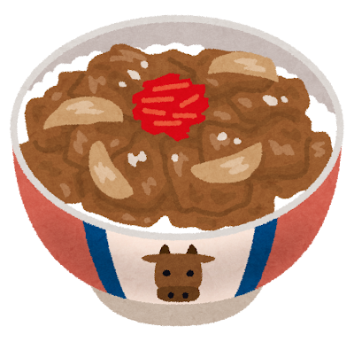
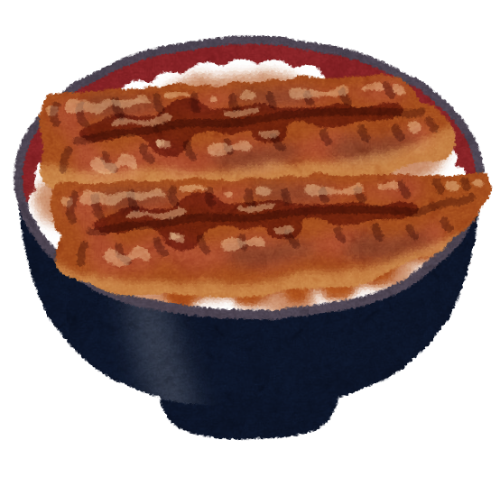
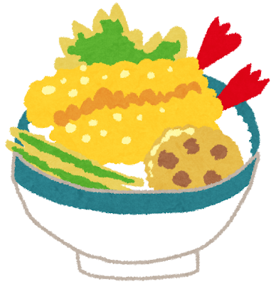

Donburi: The One-Bowl Meal

A Tradition of Practicality
Donburi (丼) simply means “bowl” — and that simplicity is the point. Born in the Edo period, donburi was working-class food: a generous bowl of rice topped with a flavorful protein and sauce. No fuss, no multiple plates — just one satisfying bowl that you could eat quickly and get back to work.
Today, donburi chains like Yoshinoya and Sukiya serve millions of bowls daily, but the concept also thrives at the highest levels — a great unadon from an old Kyoto restaurant can be a transcendent experience.
The Classics
Gyudon (牛丼)
Thinly sliced beef and onion simmered in a sweet soy broth, served over rice. Japan s most popular fast food — warm, savory, and endlessly comforting. A raw egg cracked on top is the mark of a true gyudon devotee.

Katsudon (カツ丼)
A breaded, deep-fried pork cutlet simmered with egg and onion in dashi broth, served over rice. The name is a pun — katsu also means “to win” — making it a traditional meal before exams and competitions.
Unadon (鰻丼)
Grilled freshwater eel glazed with a sweet soy-based tare sauce over rice. A summer delicacy said to give stamina during the hottest days. Eel restaurants in Japan often have histories spanning centuries.

Tendon (天丼)
Crispy tempura served over rice with a savory-sweet sauce. The contrast of crunchy batter meeting soft, sauce-kissed rice is pure satisfaction.

Donburi proves that a great meal needs nothing more than a bowl, good rice, and something worth putting on top of it.